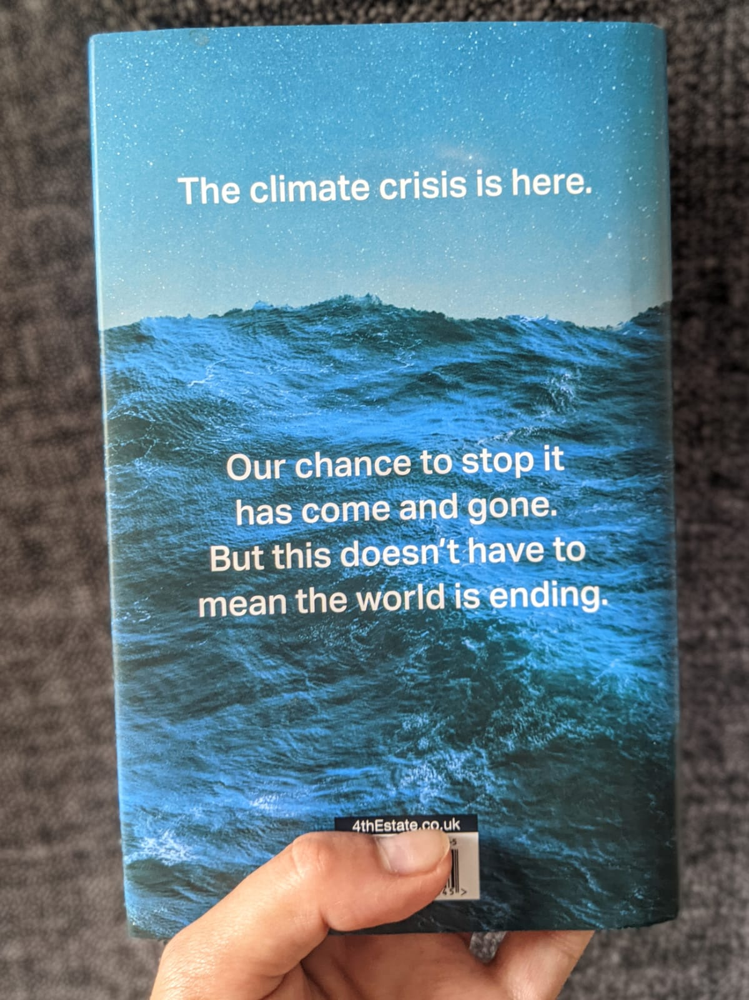
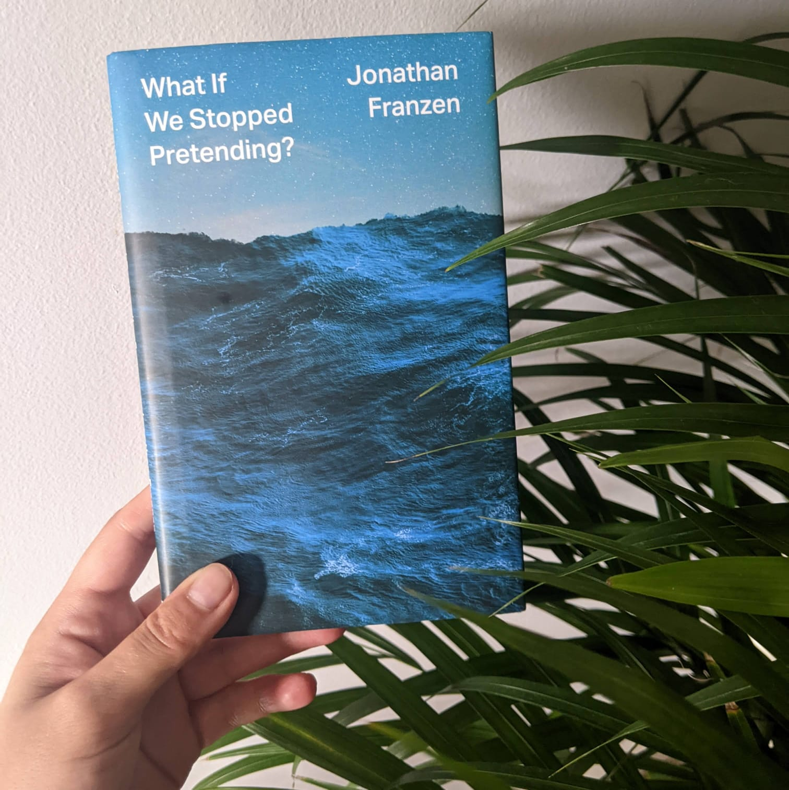
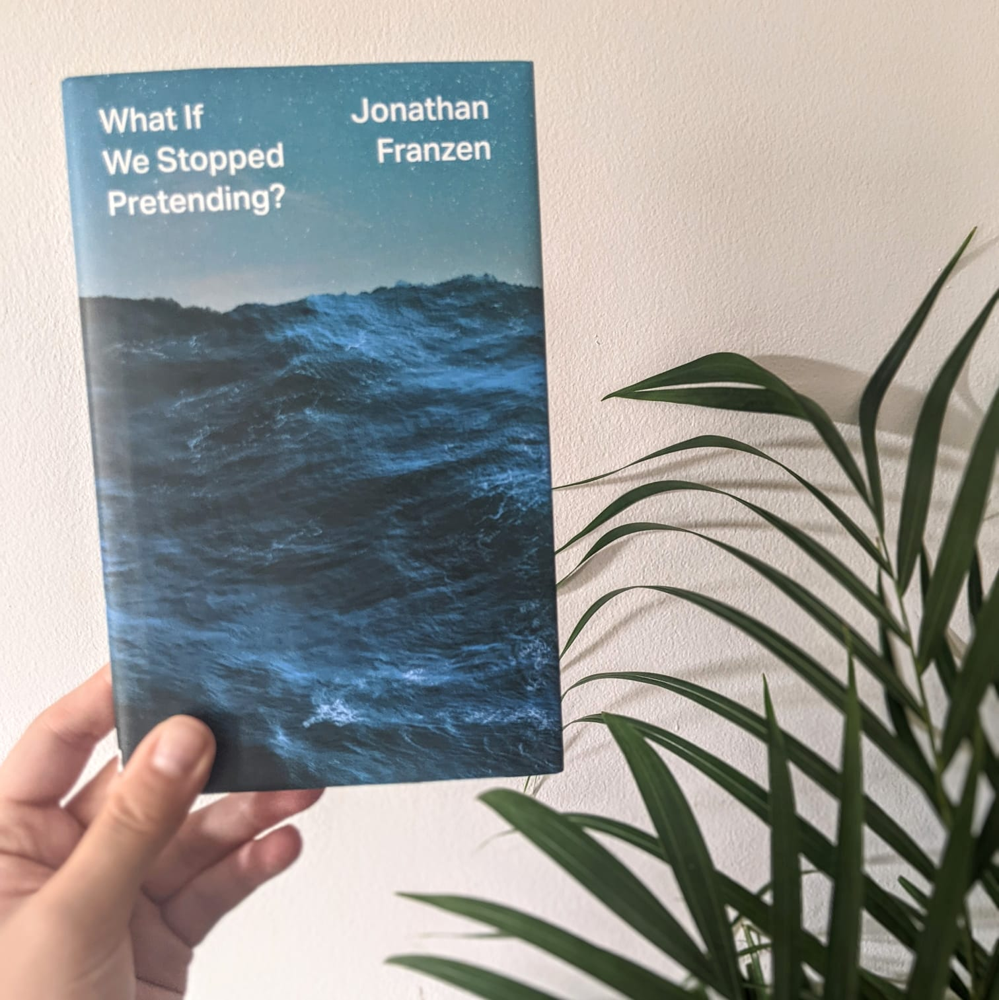

What If We Stopped Pretending?
by Jonathan Franzen
Warning:
what follows is a review containing very mild plot spoilers. If you wish to read the book knowing no more than what is on the front cover, do not proceed. If you wish to read the book knowing slightly more than the dust jacket cover, please proceed.
At its most cut and dry, the premise of Franzen’s essay
All-in-all, I might not have been the right audience for this book. Some of the more cutting, cynical tones I didn’t feel were necessary on a personal level, because I felt like—not only am I already on-side, but I’m not seeing the intense resistance that Franzen was speaking of being so widespread. That being said—it is a necessary piece, not only for the well-written validation that it provides, but as a pivotal piece of science communication for those who have joined the climate community recently. Probably the most important message this essay communicates, is the realities of what it means to be a scientist, and why messaging from academia needs to come with caveats.

Let me be absolutely clear: I am not advocating, nor will I ever advocate for, rejecting messaging from academia wholesale, or ignoring evidence-based research.
To provide context for the rest of this review, a short review of how the structures of academia work are necessary. Scientists prove their mettle and earn their most important title (Dr) through a PhD. This is a gruelling process that lasts years (in the UK, three-and-a-half years to four; in mainland Europe, similarly; in the United States, up to seven years or even more depending on your funding situation). To get a PhD, you usually “play the game”—you typically have done well in school and university up until you apply for a PhD, you demonstrate additional learning taken on through your own mettle, you do a few research opportunities at university departments, though likely no more than a few months at a time (in the UK at least). Once you have obtained a PhD (a process that becomes increasingly more competitive with each year), you must now drop everything you thought you know about how to study, how to succeed—because now you are dropped in to a research problem that you must solve primarily on your own. The level of support you can get from your supervisor and from your research group varies vastly, but even if you receive excellent care—primarily
Caveat: if this does not reflect your PhD experience, that is because I cannot speak for all experiences. I am speaking primarily from a place of having spoken to fellow PhD students from across the UK and mainland Europe. However, that does not mean the above is not without evidence—
The PhD process therefore is inherently isolating, inherently difficult, inherently privileged. If you survive a PhD process—and it’s important to remember, that not everyone does, particularly students who are less privileged—you should come out of it (generally; not speaking for specialisations, as each PhD will grant as specific set of skills unique to that student) with great research skills (legitimised by fellow scientists) and are an expert in your extremely niche field (you’ve just furthered humanity by a tiny nubbin of a singular branch of the tree of knowledge). If you decide to follow on to academia, you now must engage in the rigorous post-doc application process (for every post-doc position, there are more PhD candidates than there are positions available). Post-docs are usually one to two year stints at a different university (moving entire cities, if not countries). They are underpaid compared to what you would expect a person of similar education and experience to make in industry, but become
At this point, say you have managed to lurch from one post-doc to another, managed to uproot yourself massively every one to two years, both emotionally and financially. It is no easy thing to move so often, leaving behind support systems that you’ve barely managed to breathe life into as it is only a few years you’ve been there, and it is no cheap thing either, with being underpaid already, and many institutions not providing relocation fees. Therefore, this system becomes inherently privileged: it presupposes you have no need to stay close to family (need to care for an ageing parent that cannot relocate with you? Your nuclear family is struggling to come to grips with moving so often, with your spouse not able to find new jobs easily and/or your children struggling in local school systems? Out of luck, unless you can manage to find the funding in a ravaged and ultra-competitive funding landscape), it presupposes you have the financial fallbacks to not spend much of the post-doc salary and instead save up for the next move, it presupposes you have the emotional intelligence and resilience to engage in a long-distance relationship with not only likely your partner, but your family and friends for the majority of your mid-adult life, and deal with often socially toxic academic environments. Additionally, in order to survive the hyper-competitive funding and job applications, you are required to wholeheartedly sell your version of your research—even if you know or acknowledge the flaws or gaps in your research in papers or conferences, at some level you must practice continually asserting your research and
Yet another caveat: this does not mean that the people that have achieved tenure positions do not deserve them. It does not mean that they are
Franzen does a great job elucidating to a mainstream audience how scientists’ perspectives could (should?) be seen—how confidence intervals work in the mind of a scientist, and how to interpret that in a way that respects what science, an iterative and flawed and biased process, actually is.

When a scientist predicts a rise of two degrees Celsius, she's merely naming a number about which she's very confident: the rise will beat least two degrees. The rise might, in fact, be far higher.
--Jonathan Franzen,
But I want to take that farther. Why do scientists not automatically and inherently make great policy makers? Why must we be evidence-based, but not cling to science as if it is the only vessel that will save us in the floods?
A third and final caveat: again, this is not always the case. It also does not mean that you can’t—generally—trust a scientist, or even a scientist talking about work that they’re not a specialist in. It just means that academic systems are

This is where unrealistic science communication from scientists comes in. For example, climate change/crisis came about after years of being taught “global warming”—a phrase only changed once it was clear that the general mainstream audience was unable to connect their daily lived experiences with the term, because climate and weather are two vastly different concepts not generally taught to public at large. To me, this is a striking example of how that bubble scientists can tend to live in, has come between them and the general public at a pivotal moment—we could be much further along the line with climate action if we hadn’t had to spend years battling misinformation about climate and weather and the meaning of global warming versus climate change. Similarly, the most prescient example of this is—humanity being able to limit warming to 1.5 degrees globally.
Whether because scientists can communicate amongst themselves much better, or because, again, times and attitudes have moved on since this was originally published, in a survey of 40% of living IPCC authors, six in ten scientists expect warming of
That all being said, Franzen’s ultimate conclusion stands without issue. Again, this feels as if it has been long acknowledged already, at least in my own circles, but—climate actions are not limited to just advocating for a fossil-fuel free future. Climate actions run the gamut of social justice and equity issues—from ensuring equal voting rights to advocating for local community gardens that allow for everyone to have access to nature, no matter how urban their area. Increased awareness of this is part of what I hope this book club will encourage. Additionally, it further reinforces the idea that we don’t necessarily need more climate scientists—what we need, urgently, is for everyone to be climate-aware at the job they already hold. Every job should become a green job. This is in part because we cannot force someone to care about something they shouldn’t—not everyone is able or wants to do the academic work behind a PhD, and that’s okay. However, it’s also because we are so systematically not climate-friendly as an economy and a society, that we need everyone to do their part and examine how their job contributes to that and can mitigate that.
Another theme that I felt

Up until this point in writing this review, I had refrained from reading the essays that Franzen writes about in
As for Franzen not being a scientist—I noticed from his New Yorker essay
At this point I've had to stop myself from further writing about Franzen's articles--I can see why it produced so many counter reviews and responses!
All in all, Franzen brings a measured, practical voice to the table, and reflects audiences that climate scientist and policymakers should take care to avoid alienating. I look forward to reading his fiction works, as well as delving in to his essay collection, and I hope that we're able to continue fostering spaces online and, most importantly, in our local communities, where we can appreciate nuance and strike that balance between idealism and practicality.
Read this and enjoyed it?
- Feeling like after reading this your anxiety has increased? Please reach out for resources around eco-anxiety, and check out blogs like ecogrief.exeter
- Let me know what you thought and your analysis, and let’s spark a conversation!